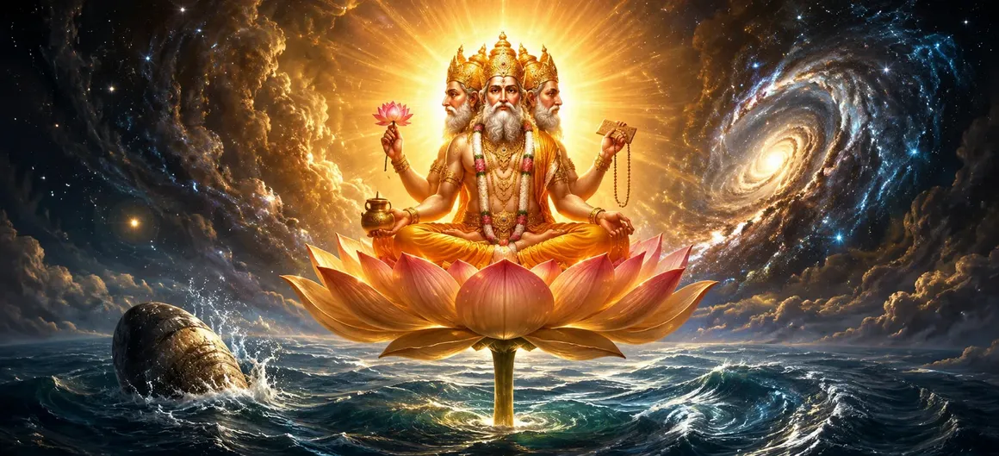

After the manifestation of Divine Shakti, the foundations of creation had been established, yet the universe still remained in its subtle and unmanifest state. The divine energies required for creation were present, but the great task of shaping the worlds, living beings, celestial realms, and cosmic order had not yet begun. The sages therefore desired to know who would perform this sacred responsibility and how the process of creation would unfold according to the will of the Supreme Lord. In response, the Shiva Purana reveals the appearance of Lord Brahma, the first creator of the universe. Brahma did not arise independently, nor was he separate from the divine plan of Shiva and Shakti. He emerged through their eternal power and divine will to carry out the work of creation. Through him, the countless forms of life, the worlds, the gods, and the sacred laws governing existence would gradually come into manifestation. This chapter describes the sacred birth of Lord Brahma and explains his role within the cosmic order. It reveals how creation begins under the guidance of the Supreme Lord and demonstrates that even the creator himself acts according to the divine power of Shiva and Shakti. Through this narration, devotees gain a deeper understanding of the origin of the universe and the divine purpose behind creation itself.
Although Divine Shakti had manifested and the foundations of creation were established, the visible universe had not yet taken shape. The countless worlds, living beings, celestial realms, and sacred laws still existed only in their subtle form. For creation to unfold in an orderly manner, a divine being was required to organize and manifest the cosmic plan. Lord Shiva, the Supreme Lord, therefore willed that a creator should arise who would carry out this sacred responsibility. This creator would not act independently but would perform his duties under the guidance of Shiva and the power of Divine Shakti. Thus began the preparation for the appearance of Lord Brahma, the first creator of the universe.
Nothing in creation occurs without the will of the Supreme Lord. The appearance of Lord Brahma was not the result of chance but a direct expression of Shiva's divine intention. Through His infinite wisdom, Shiva understood the needs of the future universe and established the means through which creation could proceed. The Shiva Purana teaches that every divine function within the universe originates from the Supreme Lord. Creation, preservation, and dissolution are all parts of His cosmic design. The birth of Brahma therefore represents the beginning of the creative phase of that eternal divine plan.
As the process of creation advanced, a magnificent cosmic lotus appeared through the divine power of Shiva and Shakti. This lotus was unlike any earthly flower. Radiant with celestial light and filled with divine energy, it symbolized purity, wisdom, and the unfolding of creation itself. The sacred lotus became the seat upon which the creator would appear. The sages listened in amazement as this wondrous vision was described. The cosmic lotus represented the first visible sign that the universe was beginning to emerge from its subtle state into manifestation.
Brahma appeared to begin the sacred work of creation.
His appearance was the direct result of Shiva's cosmic purpose.
He would perform creation according to the will of Shiva and Shakti.
When Lord Brahma first appeared upon the divine lotus, he found himself surrounded by an endless cosmic expanse. There were no worlds, no mountains, no stars, and no living beings. Everywhere he looked there was only the vast mystery of existence. Although endowed with divine intelligence, Brahma did not immediately understand who he was, why he had appeared, or what purpose he was destined to fulfill. Filled with curiosity and wonder, Brahma observed the magnificent lotus upon which he was seated. Its radiance surpassed all earthly beauty, and its divine nature revealed that it had originated from a higher source. Thus began Brahma's quest to discover the truth of his own origin.
Desiring to know the origin of the lotus, Brahma began searching for its source. Looking downward through the stem of the lotus, he hoped to discover where it began and who had created it. He journeyed through the vast cosmic depths for a long time, yet no end could be found. The mystery remained hidden from him. This sacred episode teaches that divine truth cannot always be discovered through outward searching alone. Even Brahma, the future creator of the universe, could not uncover the highest reality merely through effort and intellect.
After his search proved unsuccessful, Brahma returned to the lotus and sat in deep contemplation. At that moment, he heard a mysterious divine sound instructing him to perform tapas, or sacred meditation. Understanding that this command came from a higher divine source, Brahma obeyed with humility and devotion. He withdrew his mind from external distractions and focused entirely upon the Supreme Reality. Through meditation, he sought the wisdom that could not be attained through ordinary observation. Thus, Brahma began the spiritual discipline that would prepare him for his divine mission.
Brahma accepted the divine command with complete trust.
Through tapas, he prepared himself for higher wisdom.
Divine knowledge would soon reveal his purpose and destiny.
After a long period of meditation, divine knowledge gradually arose within the heart of Lord Brahma. The confusion that had surrounded his birth disappeared, and he began to understand the sacred purpose for which he had been created. Through the grace of the Supreme Lord, the mysteries of creation were revealed to him. Brahma realized that he had been entrusted with a great responsibility. He was destined to become the creator of worlds, beings, and cosmic order. However, he also understood that his power originated entirely from the divine will of Shiva and Shakti.
The task before Brahma was immense. He would have to create countless worlds, celestial beings, sages, animals, plants, and all forms of life. He would also establish the sacred laws that would govern existence throughout the universe. Yet Brahma remained humble. He understood that he was merely an instrument of the Supreme Lord. The true source of all power remained Shiva and Shakti, while Brahma's role was to carry out their divine plan.
As Brahma contemplated the vast work ahead, he understood that creation alone would not be sufficient. Once worlds and living beings came into existence, they would require protection, nourishment, balance, and guidance. Without preservation, creation itself could not endure. Thus the cosmic plan required another divine force—one who would sustain and protect the universe after it had been created. This realization prepared the way for the appearance of another great deity whose role would be essential to the harmony of creation.
Having received divine wisdom and understood the purpose of creation, Brahma awaited further guidance from the Supreme Lord. The sacred story now turns toward the appearance of Lord Vishnu, who would become the preserver and protector of the universe. Just as Brahma was appointed to create, another divine manifestation would arise to sustain all existence. Thus the next stage of the cosmic mystery begins with the creation of Lord Vishnu and the establishment of the divine balance that governs the universe.
The sacred birth of Lord Brahma teaches an important spiritual truth. Even though Brahma was destined to become the creator of the universe, he did not immediately possess complete knowledge. Before he could fulfill his divine responsibility, he had to seek truth, practice meditation, and receive guidance from the Supreme Lord. This lesson reminds devotees that wisdom is not gained through pride or external effort alone. True understanding arises through humility, devotion, patience, and divine grace. Just as Brahma attained knowledge through meditation upon the Supreme Reality, every seeker must turn inward to discover spiritual truth.
Lord Brahma has now received divine wisdom and accepted his sacred duty as creator. Continue to the next chapter to discover the creation of Lord Vishnu and the divine power of cosmic preservation.